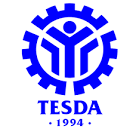

Technical Education and Skills Development Authority
The Technical Education and Skills Development Authority (TESDA) is the government agency tasked to manage and supervise technical education and skills development (TESD) in the Philippines. It was created by virtue of Republic Act 7796, otherwise known as the “Technical Education and Skills Development Act of 1994”. The said Act integrated the functions of the former National Manpower and Youth Council (NMYC), the Bureau of Technical-Vocational Education of the Department of Education, Culture and Sports (BTVE-DECS) and the Office of Apprenticeship of the Department of Labor and Employment (DOLE).
TESDA’s vision is to be ‘the transformational leader in the technical education and skills development of the Filipino workforce.’ TESDA sets direction, promulgates relevant standards, and implements programs geared towards a quality-assured and inclusive technical education and skills development and certification system.
TESDA Training System
TESDA offers Digital Courses, Automotive Courses, Business and Management Courses, Driving Courses, Hotel-Restaurant-Culinary and Food Management Courses, Advanced Eskrima Language Courses, Aircraft and Aviation Courses, Cosmetology and Beauty Care Courses, Electronics and Electrical Courses, Caregiver Courses, Computer Related and Software Development Courses, Building Construction and Welding Courses, Call Center and Contact Center Services Courses, Dental Technology Courses, Dental Technology Course The aforementioned government agency also grants NC and COC Certifications to students who pass their required actual exams. Companies in the Philippines and even abroad accept TESDA diplomas as employment qualifications.
What is the Meaning of TESDA
TESDA stands for Technical Education and Skills Development Authority.
TESDA formulates manpower and skills strategies, establishes appropriate skills standards and assessments, supervises and monitors manpower policies and programs, and provides policy directions and resource allocation recommendations for both commercial and public TVET institutions. Today, TESDA has evolved into an organization that is timely, effective, and efficient in providing its clients with various services. In order to realize its multifaceted objective, the TESDA Board has been developing strategies and initiatives designed to have the greatest influence on human resource development in a variety of fields, industries, and institutions.
TESDA LOGO
Here are the sample logo of TESDA

Tesda Logo
Mission of Tesda
Integrate, coordinate, and oversee programs for skill development
Restructure efforts to develop and promote middle-level personnel;
Approve skills criteria and assessments;
Develop a system of accreditation for institutions engaged in middle-level workforce development;
Fund programs and projects for technical education and skill development; Assist trainers with program creation.
Overview of Tesda
TESDA was formed by Republic Act No. 7796, also known as the "Technical Education and Skills Development Act of 1994," which was signed into law on August 25, 1994 by President Fidel V. Ramos. The goal of this act is to encourage and organize business, labor, local government, and technical-vocational institutions to invest in the nation's human resources.
Its goal was to avoid duplication of skill development programs undertaken by various public and private sector groups, as well as to give national direction for the technical- vocational education and training (TVET) system. Given this, one of TESDA's primary goals is to design a comprehensive development plan for middle-level individuals based on the National Technical Education and Skills Development Plan.